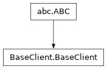

BaseClient module¶
- class BaseClient.BaseClient(host, port)[source]¶
Bases:
ABCAbstract base class for client classes.
- create_user()[source]¶
Creates a new regular user.
- Returns:
bool: True if the user was created successfully, False otherwise.
- delete_file(server_path)[source]¶
Deletes a file from the DFS.
- Args:
server_path (str): The absolute path of the file to delete.
